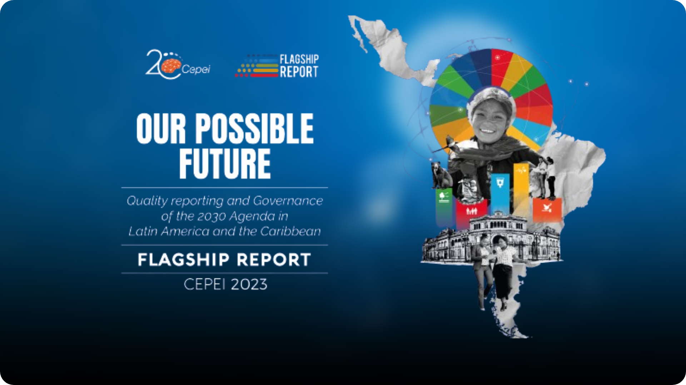
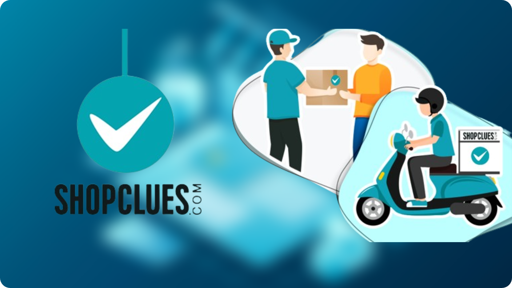
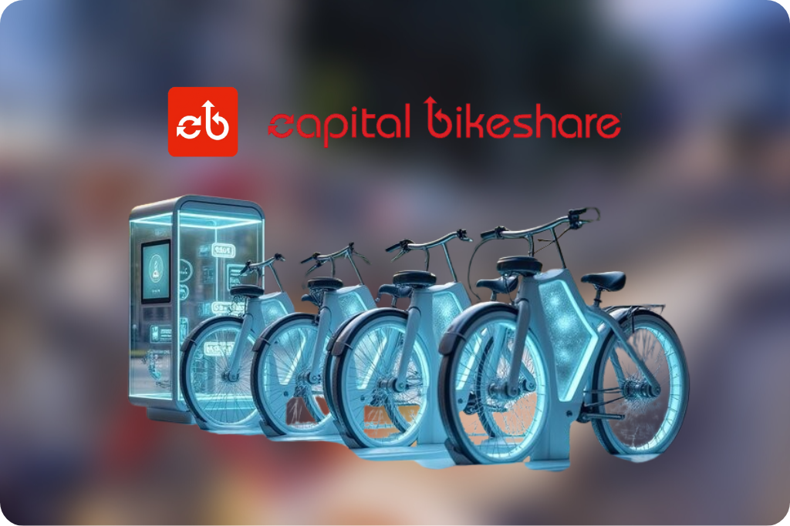

Amey Pathare
– Data Analyst | Engineer
I help teams make decisions they can trust. My work is about taking messy, incomplete data and turning it into a clear picture that answers the questions whether that's a product change, a pricing shift or a process fix. I spend as much time listening to stakeholders and understanding their goals as I do cleaning and analyzing data because the best insights come from knowing which questions actually matter. I present findings in plain language with visuals that make the point obvious not just pretty. I'm comfortable moving between the technical details and the bigger picture and I measure my success by whether the people I work with feel more confident making a call after we've looked at the data together.
Value I Bring
Scroll down to explore ↓
Why Not Work Together
to help your business uncover the hidden anomalies, trends and patterns that everyone else is overlooking?
Design
for your workflow
Build
for your business goals
Technical Skills

Databricks
Optimize Spark queries for large‑scale data processing and analytics. Connect Databricks with cloud storage and data lakes for unified data management.
Publications
Twitter Airlines Sentiment Analysis
Click HereUsing BI Visualization to Track Progress in Latin American Countries for the Latin American Government
Click HereGet to know me 😉
AIRBNB ROOM RENTAL ANALYSIS
REAL ESTATE & E-COMMERCE
Power BI, Excel
June 2023 – July 2023
Airbnb is a global online marketplace that connects people looking to rent out their homes with people looking for a place to stay.
View project →
SDG ANALYSIS LATIN-AMERICAN GOVERNMENT
SOCIAL & ECONOMIC DEVELOPMENT / GOVERNMENT
Power BI, Excel
April 2023 – May 2023
The Sustainable Development Goals (SDGs) are a set of 17 goals that the world has agreed to achieve by 2030, aiming to solve poverty, hunger, inequality and climate change.
View project →
SHOPCLUES CUSTOMER ANALYSIS
E-COMMERCE
SQL, Power BI
July 2023 – August 2023
ShopClues is a leading online marketplace in India that offers a wide variety of products to customers across the country.
View project →U.S. MASS SHOOTING ANALYSIS
GOVERNMENT / CRIME
SQL, Power BI
August 2023 – September 2023
Mass shootings in the United States have become a pressing and deeply concerning issue, capturing the attention of the nation and the world.
View project →
Capital Bike Sharing Prediction
TRANSPORTATION
Pyspark, Databricks
September 2024 – October 2024
The rise of urban cycling has led to a growing reliance on bike-sharing services as sustainable alternatives to traditional transport modes.
View project →Rice Image Classification
SUPPLY CHAIN
Deep Learning
January 2025 – February 2025
Rice is an important food eaten all over the world. Sorting and classifying rice is very important in farming and supply chains.
View project →Hotel Reviews Prediction (LLM + ML)
TRAVEL & HOSPITALITY
Python, LLM, Machine Learning
March 2025 – May 2025
Hotel reviews are a critical voice of the customer in the hospitality industry, directly influencing booking decisions and business reputation.
View project →Automation of Regulatory Statistical Reporting
FINTECH
Snowflake, SQL, Python, Metabase, Git, Airflow, DBT
October 2025 – November 2025
Qonto is a leading European fintech company that provides innovative payment solutions and financial services to businesses across multiple countries.
View project →My Analysis,
Our Advantage
©2026 Amey's portfolio. All rights reserved.
Made by Amey with ❤️